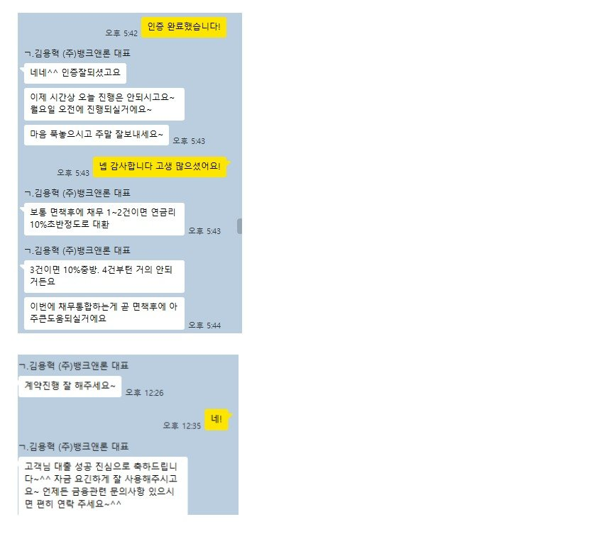

[개인회생자대출 ] 김용혁 이사님 회생 대출 후기!

26년 4월 말 개인회생 완주 앞두고 미납이 생겨서 미납 정리 목적으로 문의 드렸었어요
결말까지 완벽하게 해서 남기고 싶어 기다리다 이제서야 쓰네요ㅎㅎ
당시 기대출은 3건이나 있었고 회생자 대출은 높은 이자 때문에 해주는 걸 텐데
면책이 얼마 남지 않은 상황에 과연 나올까 걱정이 많았어요
당연히 부결이겠지 싶어 기대 없이 문의 드렸었는데 미납금 정리와 채무 통합까지 도와주시고
몰랐던 내용까지 알려주셔서 연락 드리길 정말 잘했다 했습니다!
사실 이전 회생자 대출 후 중개인이 10만원 상당 기프티콘을 요구했던 적이 있어서
불안과 불신도 있었는데 대화 몇 번에 그런 고민이 무색하게 친절하고 자세하게 도와주셨어요
뱅크앤론 김용혁 대표님 덕분에 개인회생 무사히 면책도 받고 신용 점후 회복 중에 있습니다!
(아쉽게도 저는 점수가 조금 뒤늦게 오르는 편인 것 같네요ㅠㅠ)
조만간 조금 더 낮은 금리로 대환 위해 연락 드릴 예정이고 앞으로도 믿고 맡길 것 같습니다
감사합니다!
https://naver.me/5GcvO3bK